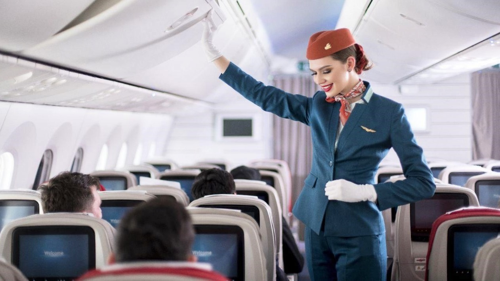

First Class
Experience air travel like never before. Our First Class cabins offer private suites with fully lie-flat beds, gourmet multi-course meals curated by world-class chefs, and personalized in-flight service. Enjoy exclusive lounge access, priority boarding, and a level of comfort that redefines flying.
Business Class
Productivity Meets Comfort. Travel in style with our Business Class cabins, designed for both work and relaxation. Spacious seating converts into fully flat beds, allowing you to arrive refreshed and ready. Enjoy premium dining, enhanced entertainment, and access to our luxurious business lounges.
Economy Plus
Economy Plus gives you extra legroom and added perks without the premium price. Enjoy priority boarding, upgraded meal options, larger entertainment screens, and access to power outlets at every seat. It’s the perfect choice for travelers who want a little more comfort and convenience.
Economy
Our Economy Class is designed to offer a comfortable and affordable flying experience. Passengers enjoy ergonomic seating with adjustable headrests, complimentary meals on long-haul flights, and a personal entertainment screen loaded with movies, music, and games. USB charging ports and friendly service ensure a pleasant journey from start to finish.
In-Flight Entertainment
At SkyWays Airlines, your journey begins the moment you take your seat. Our in-flight entertainment system is designed to keep you engaged, relaxed, and entertained throughout your flight. Each seat is equipped with a personal touchscreen loaded with hundreds of blockbuster movies, popular TV series, and a wide variety of music albums and curated playlists.
Meal Sevices
We believe every journey deserves a great meal. In Economy, passengers enjoy complimentary hot meals on long-haul flights, with snacks and drinks available on all routes. Economy Plus offers upgraded meals and added beverage choices. Business Class features multi-course gourmet dining with premium wines, while First Class guests can dine on demand from menu

SkyWays Airlines
Follow us:
© 2025 SkyWays Airlines. All rights reserved